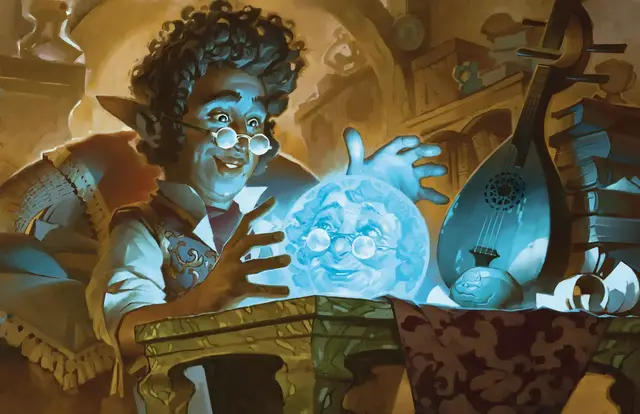

Наблюдение
Scrying
5 уровень, Прорицание

Время сотворения 10 минут
Дистанция На себя
Компоненты В, С, М (фокусировка, стоящая как минимум 1000 зм, такая, как хрустальный шар, серебряное зеркало или чаша со святой водой)
Длительность Концентрация, вплоть до 10 минут
Классы Бард, Волшебник, Друид, Жрец, Колдун
Подклассы круг земли (друид), домен знаний (жрец), домен света (жрец), клятва мести (паладин), клятва смотрителей (паладин)
Вы можете видеть и слышать конкретное выбранное вами существо, находящееся на том же плане существования, что и вы. Цель должна совершить спасбросок Мудрости, модифицируемый тем, как хорошо вы знаете цель, и тем, какая связь с этим существом у вас есть. Если цель знает, что вы накладываете это заклинание, она может добровольно провалить спасбросок, если хочет, чтобы за ней следили.
| Знание | Модификатор спасброска |
| Через посредников (вы только слышали о цели) | +5 |
| Из первых рук (вы встречались с целью) | +0 |
| Знакомые (вы хорошо знаете цель) | -5 |
| Связь | Модификатор спасброска |
| Образ или рисунок | -2 |
| Вещь или одежда | -4 |
| Часть тела, прядь волос, кусок ногтя и т.п. | -10 |
При успехе цель не попадает под действие, и вы не можете использовать на ней это заклинание в течение 24 часов.
При провале заклинание создаёт невидимый сенсор в пределах 10 футов от цели. Вы можете видеть и слышать через него, как если бы вы там находились. Сенсор перемещается вместе с целью, оставаясь в пределах 10 футов от неё, пока активно заклинание. Существа, способные видеть невидимые предметы, видят сенсор как светящийся шарик размером с ваш кулак.
Вместо того чтобы нацеливаться на существо, вы можете выбрать целью место, уже виденное вами. В этом случае сенсор появляется в этом месте и не перемещается.